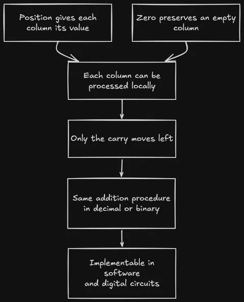

Part 5 of 6
The Number That Shouldn't Exist
By Sukalyan RoyPublished Updated 10 min read
TL;DR #
-
Brahmagupta defined explicit arithmetic rules for zero in 628 CE, shifting it from a placeholder to a formal number.
-
The combination of Aryabhata's positional notation and Brahmagupta's zero made arithmetic local and mechanical.
-
The famous Bakhshali manuscript zero is a placeholder dot, not the fully realized arithmetic zero that makes modern computation possible.
The
code/place_value.pyscript implements base conversion and carry-propagating column addition in both decimal and binary, demonstrating exactly how a positional zero makes algorithmic arithmetic possible.
We all know this story. India invented zero. It spread west. The end.
The story we have in our heads was wrong in almost every interesting detail.
So. Let me tell you what actually happened.
What a zero placeholder is #
The Babylonians had something zero-shaped by around 300 BCE. A scribal gap instead of a number. In their base-60 system, they needed a way to distinguish 1 from 60 from 3600, so they eventually started using two angled wedges to mark an empty column. No symbol at the end of a number, and never used alone. It was a typographical fix to an ambiguity problem. Wikipedia, "0"
The Maya had something even more developed, a shell glyph for zero, used in a vigesimal (base-20) positional system, attested by 36 BCE. They may have used it in a slightly richer way than the Babylonians. It doesn't matter for our purposes: their system had no contact with India or with anything that became our arithmetic. Wikipedia, "0"
The distinction is between a placeholder and a number.
A placeholder tells you: this column is empty, It's a formatting device.
A number participates in arithmetic: you can add it, subtract it, multiply by it, and you get predictable results.
The Babylonian and Maya systems had the placeholder. What Indian mathematics did, specifically, what Brahmagupta did in 628 CE, was give zero the arithmetic.
Brahmagupta, 628 CE #
Brahmagupta was born in 598 CE. By the time he was thirty, he had written the Brāhmasphuṭasiddhānta, "Correctly Established Doctrine of Brahma", a substantial astronomical and mathematical treatise. Chapter 18 is where the history of zero turns. MacTutor, "Brahmagupta"
He called positive numbers dhana (fortune) and negative numbers ṛṇa (debt). Zero he called śūnya, void, empty. And then he did something nobody had done before in writing: he gave śūnya arithmetic rules.
"The sum of a negative and zero is negative; [that] of a positive and zero is positive; [and that] of two zeros is zero." For multiplication: "the product of zero and a negative, of zero and a positive, or of two zeros is zero." Wikipedia, "Brahmagupta"
Before 628, they were not obvious as nobody had written them down as rules. The move Brahmagupta made was to treat zero as an element of the number system, something you can operate on just like any other number, rather than as a gap in notation.
He also worked out negative number arithmetic: product of two negatives is positive, a fortune subtracted from zero gives a debt, a debt subtracted from zero gives a fortune. He was essentially describing what we'd now call a ring.
Then he tried division by zero. He claimed that 0 ÷ 0 = 0. This is wrong, division by zero is not well-defined, and it's a recognized error in an otherwise remarkable text. The MacTutor biography calls it "a brilliant attempt."
It would take until Bhāskara II in the 12th century before Indian mathematics acknowledged that the result was more complicated, and until the 19th century before rigorous answers were available.
Aryabhata's fifty-nine words on place-value #
Before Brahmagupta gave zero its arithmetic, Aryabhata had made the positional structure explicit. Aryabhata was born in 476 CE. In 499 CE, he notes he was 23 at the time, he wrote the Aryabhatiya. Chapter 1, second stanza: sthānam sthānam daśa guṇam, "from place to place, ten times in value." Wikipedia, "Āryabhaṭa numeration"
That's the whole principle. Everything about our number system follows from it: the reason 347 means 3×100 + 4×10 + 7×1, the reason 42 in binary means 1×32 + 0×16 + 1×8 + 0×4 + 1×2 + 0×1. It's a new idea about what position means.
Aryabhata himself didn't write a zero symbol, his own notation system used Sanskrit letters with vowels encoding place values, clever and extraordinarily compact, but not the symbol-based system we ended up with. The place-value principle was already operating in Indian mathematics by 499 CE. Wikipedia, "Aryabhata"
What the combination of Aryabhata's explicit place-value principle and Brahmagupta's zero arithmetic gives you is a complete number system: ten digits (0–9), position determines magnitude, and every digit including zero has defined arithmetic properties.
The Bakhshali manuscript #
You may have seen headlines from 2017 announcing the discovery of the world's oldest zero, in a manuscript held at Oxford's Bodleian Library: the Bakhshali manuscript, a collection of birch-bark mathematical leaves found in 1881 near what is now Pakistan.
Oxford's radiocarbon dating of three folios produced dates of 224–383 CE, 680–779 CE, and 885–993 CE, three folios from three different centuries, in the same manuscript.
It means the 70 leaves were assembled from materials of different ages, which makes the "oldest" framing dubious from the start.
Scholars including Kim Plofker (whose Mathematics in India, Princeton 2009, is the standard scholarly treatment of this subject) criticized Oxford for releasing the findings through press releases and YouTube rather than peer review. Smithsonian Magazine, 2017; Wikipedia, "Bakhshali manuscript"
Then in 2024, Oxford revised the dating. The entire manuscript: 799–1102 CE. The earliest folio went from "possibly 3rd century" to "probably 10th century."
What the Bakhshali zero actually is: a dot used as a placeholder within a positional grid, the śūnya-bindu, dot of the empty place. It marks an empty column. This is important and interesting evidence of the positional system in active use in Indian mathematical practice but not Brahmagupta's arithmetic zero. Wikipedia, "Bakhshali manuscript"
The carbon dating is contested; the zero-dot is a placeholder and even at the old dates, it doesn't predate the Babylonian placeholder. The real story, Brahmagupta giving zero arithmetic, is better than the headline.
Making Arithmetic mechanical #
What does it actually take to make arithmetic into an algorithm?
Consider adding 347 and 485 in Roman numerals. CCCXLVII + CDLXXXV. There is no column algorithm. You have to convert the subtractive prefixes to additive form, concatenate the letters, sort them by value, combine where possible, re-encode the result.
The system doesn't have columns or positions; there's no concept of carrying, because the symbols don't have place values. Each computation requires inspecting the whole numeral and knowing the full substitution rules. The Romans, when they needed to compute, used counting boards and then wrote the result in Roman numerals, the numerals themselves were for recording, not calculating. ScienceBlogs, "Roman Numerals and Arithmetic"
Now consider adding 347 and 485 in the positional system:
347
+ 485
-----
7+5 = 12; write 2, carry 1
4+8+1 = 13; write 3, carry 1
3+4+1 = 8; write 8
= 832Each column is independent given the carry from the column to its right. You never need to look at the whole number. The carry is a single bit, zero or one, and it always moves exactly one column left. The process is local, right-to-left, terminating. It is an algorithm in the modern sense: a finite, deterministic procedure.

What makes this work?
Position determines magnitude, so column alignment is meaningful. And zero is a valid digit, an empty column is not a gap or an ambiguity but a genuine input to that column's calculation.
Strip the zero out of the system and you cannot uniquely represent numbers like 1024, 1204, and 1240, they collapse to the same digit list [1, 2, 4] with the zeros removed. The zero is load-bearing.
The code in code/place_value.py demonstrates this: base conversion between decimal and arbitrary bases (including binary), and the column addition algorithm running on digit lists with carry. Run it; you'll see 347 + 485 done in both base 10 and base 2 by the same function, same algorithm, different radix.
# Same algorithm, base 10:
show_addition(347, 485, base=10) # → 832
# Same algorithm, base 2:
show_addition(347, 485, base=2) # → 1101000000 (= 832)Binary is literally the same positional structure as Decimal with base 2 instead of base 10. The computer's adder circuits are built on the local, carry-propagating column algorithm. The reason you can implement addition in hardware, in gates, in silicon, is that each bit position needs only its two input bits plus one carry bit from the right. That locality comes from the positional structure. That positional structure, in the form the whole world uses, comes from India. Wikipedia, "Positional notation"
Get the code #
Download the demo ZIP · View source on GitHub
The download includes the script, README, and tests. Extract it, open the extracted the-number-that-shouldn-t-exist folder in a terminal, and run:
python3 code/place_value.pyThe demo uses only the Python standard library. See code/README.md for the test command.
Baghdad, then Pisa, then everywhere #
Brahmagupta's Brāhmasphuṭasiddhānta was written in 628. About 200 years later, a Persian mathematician named Muḥammad ibn Mūsā al-Khwārizmī, working in the House of Wisdom in Baghdad, wrote a treatise on Hindu numerals, De numero Indorum in its Latin title, that gave a full account of the Indian place-value system including zero. The text is described as likely based on an Arabic translation of Brahmagupta's work. Britannica, "Al-Khwarizmi"
Al-Khwārizmī also wrote Kitāb al-mukhtaṣar fī ḥisāb al-jabr wal-muqābala, "The Compendious Book on Calculation by Completion and Balancing." The Arabic al-jabr from that title gives us "algebra." The Latinization of al-Khwārizmī's own name, Algoritmi, gives us "algorithm." Both words that define computational thinking trace back to the same man, who was transmitting Indian mathematics westward. History of Information
In 1202, Leonardo of Pisa, Fibonacci, published Liber Abaci. He had learned the Hindu-Arabic system studying in North Africa. His book opened: "The nine Indian figures are: 9 8 7 6 5 4 3 2 1. With these nine figures, and with sign 0 which the Arabs call zephir any number whatsoever is written." Wikipedia, "Liber Abaci"
He called it modus Indorum, the method of the Indians.
The Liber Abaci made the practical case: positional arithmetic was simply faster and cheaper for commerce than Roman numerals. Italian merchants competing in Mediterranean trade needed to calculate, not just record, and the positional system let them do it without a counting board. That's the reason it spread: not scholarly consensus nor royal decree, simply economic pressure. Wikipedia, "Liber Abaci"
The nuance #
The line I've seen on social media, in textbooks, and in well-meaning retrospectives: "India invented zero." It's not wrong, exactly. It's just not the sentence that earns the weight placed on it.
Placeholder zeros existed elsewhere earlier. The Maya zero, developed entirely independently, is arguably more sophisticated as a placeholder than the Babylonian one. If the story were only about the placeholder, the Indian contribution wouldn't be uniquely significant.
The distinctively Indian thing is: zero as a number, with arithmetic rules, in a place-value system capable of representing any integer with ten symbols, transmissible and learnable. That is what Brahmagupta wrote in 628 CE and what al-Khwārizmī carried to Baghdad, what Fibonacci carried to Pisa, what ended up in every computer ever built.
A 7th-century mathematician in what is now Rajasthan figuring out the arithmetic of nothing, getting one answer wrong, and giving us the number system the whole world now uses, doesn't need inflating.
Run the column addition algorithm in code/place_value.py with base 2 and base 10. If you can break the carry logic with a specific input, open an issue on the repository to let me know.
Sources & further reading #
-
Wikipedia, "Brahmagupta": https://en.wikipedia.org/wiki/Brahmagupta
-
Wikipedia, "0 (number)": https://en.wikipedia.org/wiki/0
-
Wikipedia, "Aryabhata": https://en.wikipedia.org/wiki/Aryabhata
-
Wikipedia, "Āryabhaṭa numeration": https://en.wikipedia.org/wiki/Āryabhaṭa\_numeration
-
Wikipedia, "Bakhshali manuscript": https://en.wikipedia.org/wiki/Bakhshali\_manuscript
-
Wikipedia, "Positional notation": https://en.wikipedia.org/wiki/Positional\_notation
-
Wikipedia, "Liber Abaci": https://en.wikipedia.org/wiki/Liber\_Abaci
-
MacTutor History of Mathematics, "Brahmagupta": https://mathshistory.st-andrews.ac.uk/Biographies/Brahmagupta/
-
MacTutor History of Mathematics, "Aryabhata I": https://mathshistory.st-andrews.ac.uk/Biographies/Aryabhata\_I/
-
Oxford Bodleian Libraries, 2017 Bakhshali press release: https://www.glam.ox.ac.uk/article/carbon-dating-finds-bakhshali-manuscript-contains-oldest-recorded-origins-symbol-zero
-
Smithsonian Magazine, "Carbon Dating Reveals the History of Zero Is Older Than Previously Thought" (2017): https://www.smithsonianmag.com/smart-news/dating-ancient-indian-text-gives-new-timeline-history-zero-180964896/
-
Kim Plofker, Mathematics in India, Princeton University Press, 2009: https://books.google.ie/books/about/Mathematics\_in\_India.html?id=6nPfpOIUyAEC
-
Britannica, "Al-Khwarizmi": https://www.britannica.com/biography/al-Khwarizmi
-
History of Information, "Al-Khwārizmī Invents the Algorithm": https://historyofinformation.com/detail.php?id=202
-
ScienceOpen, "Brahmagupta and the Concept of Zero": https://www.scienceopen.com/hosted-document?doi=10.14293/S2199-1006.1.SOR-.PPDIJRA.v1
-
ScienceBlogs, "Roman Numerals and Arithmetic": https://scienceblogs.com/goodmath/2006/08/16/roman-numerals-and-arithmetic